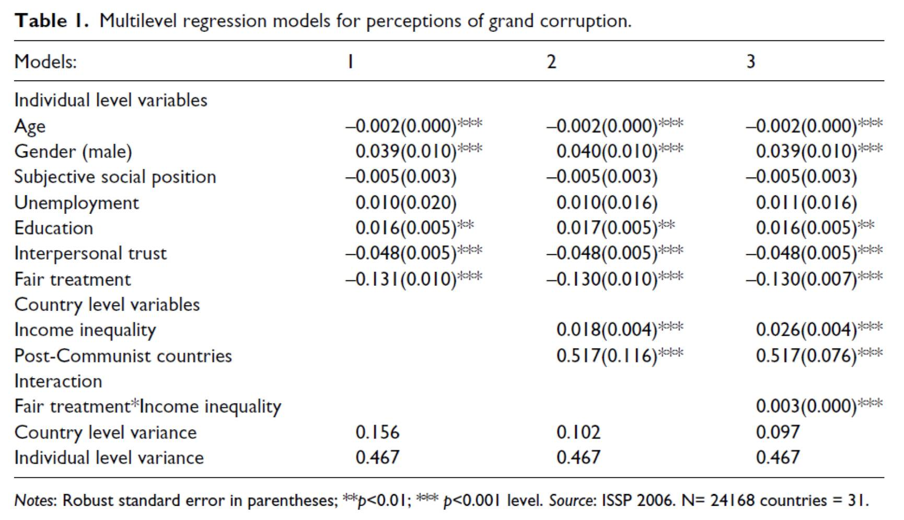
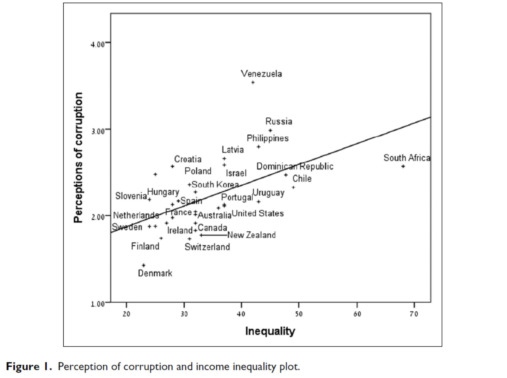
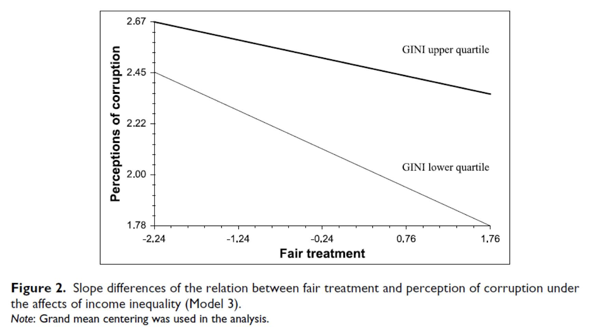

腐败、公正与不平等
收录于合集
文献来源：Gal Ariely & Eric M. Uslaner,“ Corruption, Fairness, and Inequality, ” International Political Science Review , 2017, Vol.38(3):349-362.
Gal Ariely，以色列本·古里安大学（Ben-Gurion University of the Negev）政治与政府系助理教授，研究兴趣为政治行为、公民身份与国家认同、方法论
http://in.bgu.ac.il/en/humsos/politics/Pages/staff/gal_ariely.aspx
Eric M. Uslaner，美国马里兰大学帕克分校（University of Maryland, College Park）政治与政府系教授，研究专长为腐败与信任
http://gvptsites.umd.edu/uslaner/
作者在文章开篇引入了这样一个问题，什么因素驱动了民众对腐败的感知？在现实生活中，当民众认为精英通过非法的手段来攫取财富，变得越来越富有，以及受到与普通民众受到不同的对待，民众可能认为当局具有较高的腐败程度。尤斯拉纳（uslaner）在2008年提出了 “不平等陷阱”命题，该命题指出，高度的不平等导致低水平的人际信任和高度的腐败，反过来又恶化了不平等程度。罗斯坦（Bo Rostein）等人则提出，腐败的基础是不平等。
但是，作者进一步指出，只有在平等社会里，人们对公正的认知取决于人们对腐败的认知，因为人们对公正具有强烈的期待。在他们眼里，不公正不仅仅是错的那么简单，它从根源上反映了政府系统的裂解。而在不平等社会里，人们虽然认为腐败是不可接受的，但是认为这也是不可避免与无可奈何的，因为不平等使得人们缺少主人公的意识。
在这篇文章里，作者综合了尤斯拉纳和罗斯坦之前的假设，认为越不信任他人的人的腐败感知越高。同时，作者也指出，政府官员不能公正对待他人也与民众对腐败的看法密切相关。
作者进而回顾了学界对腐败、公正、不平等与信任之间的关系探讨，指出这四个变项之间的关系是复杂的。在前人研究的基础上，作者提出如下假设：
-
当民众认为政府会公正地对待他们时会较少地认为当局具有较高的腐败程度；
-
当收入越不平等时，民众会认为所在国的当局腐败程度越高；
-
与不平等程度较高的社会相比，在平等程度较高的社会中，民众认为公正与腐败之间的关系越强；
-
相比人际信任程度较低的民众，对人际信任程度越高的民众对腐败的感知程度越低；
-
后共产主义国家公众更倾向于认为政府当局存在较高的腐败程度。
为了验证假设，作者采用2006年国际社会调查计划（International Social SurveyProgram，ISSP）对欧洲、亚洲、拉美以及非洲南部31个国家进行调查的数据。作者特别指出，尽管有学者诟病关于政治态度的数据库中都是主观性变量，存在是否真实的问题，但是作者反驳公认的清廉指标“透明国际”和世界银行的数据库同样也是通过对公众态度来反映的。
作者交待，对因变项“腐败感知”通过两个题目来测量，分别是“你认为你们国家有多少政治家是腐败的？”以及“你认为你们国家有多少公务员是腐败的？”而对自变项的选取是政府官员对待民众的公正程度，通过“在你看来，政府官员对待人们是公正的吗？”对人际信任的测量则通过“在我看来，很少人是可以完全信任的”。
在脉络变项方面，作者采用标准化世界收入不平等数据库（Standardized World Income Inequality Database, SWID），其中包括指数低到23的丹麦与高至68的南非。（指数越低，收入越平等）
作者进一步指出，既然不公正与不平等都会提高民众对腐败的感知，但是两者的交互会导致一个更加复杂的情况。据此，作者再次假设在不平等社会中，公正与平等程度与腐败感知之间的联系会弱于平等社会之间二者的关系。
数据处理结果如下：

作者指出，模型1反映了个体层面变项之间的关系，作者将年龄、性别、主观社会地位、就业情况、教育程度与人际信任等变项作为控制变项，发现作为自变项的公正程度对个体层面有显著的影响：当民众受到不公正的对待时，他们就越倾向于对政府当局持腐败的态度。

在模型2中，作者检视了国家层面腐败感知的效能，如图1所示，就腐败感知的均值而言，同样揭示了国家层面不平等程度对民众感知程度的影响。当不平等的程度越高时，民众越倾向于认为当局是腐败的。

作者将经济不平等和公正感知度做交互项，检验该交互项与腐败感知的关系。针对研究假设，作者形成图3所展示的研究结论。可以发现，尽管不同国家不平等程度有所不同，但公平度的上升都普遍伴随着腐败感知的下降。如果进一步具体比较内部的差异，可以发现，在收入与分配不平等程度较高的国家中，民众不公正遭遇的变化带来的腐败感知的变化相对较小；而在不平等程度较低的国家中，这种变化相对较大。可见在更加平等的社会中，民众对腐败更加敏感。
因此，作者总结道，本文的中心结论就是民众对待腐败的认知取决于政府对待民众的公正程度与收入的平等程度。腐败不仅仅是违法的，它也提醒我们需要通过减少不平等和不公正来减轻腐败。当然作者在最后也不忘指出，为了做进一步的分析，还需要通过政府公共服务的调查数据来做更深入的研判。
政观编辑部